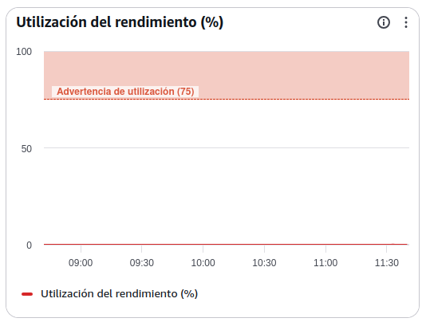
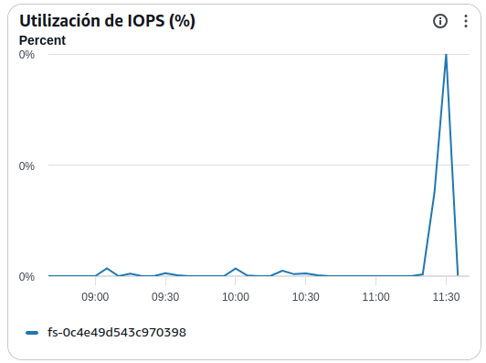
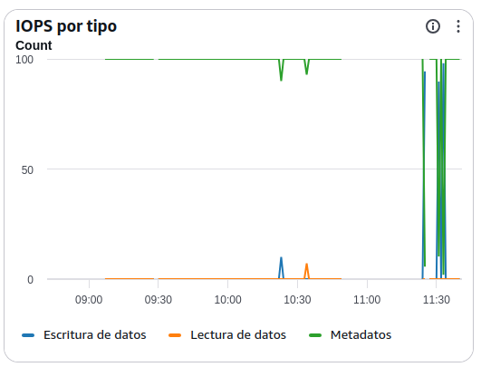
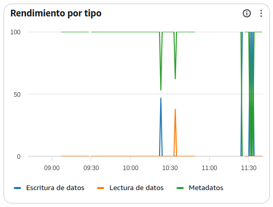
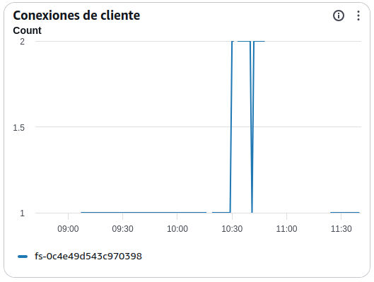
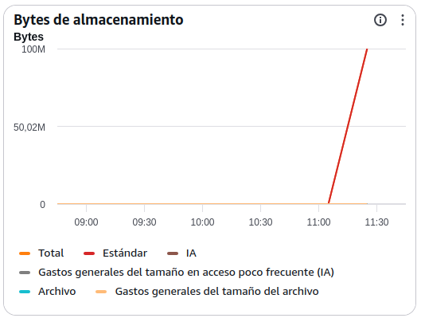

Manual básico de supervisión de Amazon EFS (Elastic File System)
AWS EFS Monitoring: Guía de Métricas para Operaciones
Introducción
La supervisión de Amazon EFS permite controlar el rendimiento, capacidad y utilización del sistema de ficheros compartido.
Objetivos del administrador SysOps:
- Detectar cuellos de botella de rendimiento.
- Identificar saturación de IOPS o throughput.
- Controlar el crecimiento del almacenamiento.
- Optimizar costes.
- Garantizar la disponibilidad de las aplicaciones que utilizan EFS.
1. Utilización del rendimiento (%)

¿Qué mide?
Porcentaje de utilización del throughput disponible en el sistema EFS.
Valores recomendados
| Valor | Estado |
|---|---|
| 0-50% | Normal |
| 50-75% | Vigilancia |
| 75-90% | Alto |
| >90% sostenido | Crítico |
Qué revisar
- Aplicaciones con accesos intensivos.
- Procesos batch.
- Copias masivas de archivos.
- Procesos ETL.
Penalizaciones
- Incremento de latencias.
- Degradación del acceso a ficheros.
- Necesidad de cambiar a modo Provisioned Throughput.
2. Utilización de IOPS (%)

¿Qué mide?
Porcentaje de operaciones de entrada/salida consumidas respecto al límite disponible.
Valores recomendados
| Valor | Estado |
|---|---|
| 0-60% | Normal |
| 60-80% | Vigilancia |
| 80-95% | Alto |
| >95% sostenido | Crítico |
Qué revisar
- Aplicaciones con muchos ficheros pequeños.
- Escaneos de directorios.
- Operaciones masivas de lectura/escritura.
Penalizaciones
- Mayor tiempo de respuesta.
- Limitación de acceso a disco.
- Pérdida de rendimiento global.
3. IOPS por tipo

¿Qué mide?
Número de operaciones por segundo realizadas sobre el sistema.
Se divide normalmente en:
- Lecturas (Read)
- Escrituras (Write)
- Metadatos (Metadata)
Qué revisar
Lecturas elevadas
Pueden indicar:
- Consultas frecuentes a datos compartidos.
- Aplicaciones sin caché.
Escrituras elevadas
Pueden indicar:
- Cargas masivas.
- Logs excesivos.
- Procesos batch.
Metadatos elevados
Pueden indicar:
- Directorios con muchos ficheros.
- Aplicaciones que realizan búsquedas constantes.
Penalizaciones
- Consumo rápido de IOPS disponibles.
- Latencias más elevadas.
4. Rendimiento por tipo (Throughput)

¿Qué mide?
Cantidad de datos transferidos por segundo.
Se divide en:
- Lectura de datos.
- Escritura de datos.
- Operaciones de metadatos.
Valores óptimos
Dependen completamente de la aplicación.
Qué revisar
Picos de throughput pueden indicar:
- Copias masivas.
- Backups.
- Procesamiento de grandes volúmenes de información.
Penalizaciones
- Saturación del throughput permitido.
- Accesos lentos a los ficheros.
5. Conexiones de cliente

¿Qué mide?
Número de clientes o instancias conectadas simultáneamente al sistema EFS.
Valores recomendados
Amazon EFS soporta miles de conexiones, pero deben vigilarse aumentos anómalos.
Qué revisar
- Nuevos servidores conectándose.
- Incrementos inesperados de consumo.
- Procesos que no desmontan correctamente el filesystem.
Penalizaciones
- Incremento de carga en operaciones de metadatos.
- Posibles degradaciones de rendimiento.
6. Bytes de almacenamiento

¿Qué mide?
Cantidad total de datos almacenados en el sistema EFS.
Suele dividirse en:
- Standard
- Infrequent Access (IA)
- Archive
Valores recomendados
Monitorizar tendencias de crecimiento más que valores absolutos.
Qué revisar
- Crecimiento continuo.
- Archivos temporales no eliminados.
- Backups almacenados incorrectamente.
Penalizaciones
- Incremento de costes.
- Consumo innecesario de almacenamiento premium.
6.1. Datos almacenados en Standard
¿Qué mide?
Datos almacenados en la clase de almacenamiento de acceso frecuente.
Qué revisar
- Información activa de aplicaciones.
- Datos de uso diario.
Recomendación
Mover automáticamente datos poco utilizados a IA mediante Lifecycle Management.
6.2. Datos almacenados en IA (Infrequent Access)
¿Qué mide?
Archivos accedidos con poca frecuencia.
Objetivo
Reducir costes manteniendo disponibilidad inmediata.
Qué revisar
- Volumen movido a IA.
- Eficacia de las políticas Lifecycle.
Penalizaciones
- Recuperaciones frecuentes pueden aumentar costes.
6.3. Datos almacenados en Archive
¿Qué mide?
Información archivada de muy baja frecuencia de acceso.
Objetivo
Minimizar costes de almacenamiento.
Qué revisar
- Datos históricos.
- Retención documental.
Penalizaciones
- Mayor latencia de recuperación.
Alertas recomendadas para producción
| Métrica | Alarma |
|---|---|
| Utilización del rendimiento | >80% durante 15 min |
| Utilización de IOPS | >80% durante 15 min |
| Conexiones de cliente | Incremento anómalo sostenido |
| Throughput lectura/escritura | Crecimiento no esperado |
| Bytes almacenados | Crecimiento superior al previsto |
| Datos Standard | Incremento continuo sin movimiento a IA |
| Utilización del rendimiento | >90% sostenido |
Categorización
Indicadores de rendimiento
- Utilización del rendimiento (%)
- Utilización de IOPS (%)
- IOPS por tipo
- Rendimiento por tipo (Throughput)
Indicadores de capacidad
- Bytes de almacenamiento
- Conexiones de cliente
Indicadores de costes
- Datos en Standard
- Datos en IA
- Datos en Archive
- Crecimiento del almacenamiento
Indicadores de disponibilidad
- Utilización de rendimiento
- Utilización de IOPS
- Conexiones de cliente
Indicadores de necesidad de escalado
Los indicadores que normalmente anticipan problemas de capacidad o rendimiento en EFS son:
- Utilización del rendimiento >80%.
- Utilización de IOPS >80%.
- Crecimiento acelerado del almacenamiento.
- Elevado número de operaciones de metadatos.
- Throughput cercano al máximo durante periodos prolongados.
- Incremento sostenido de latencia percibida por las aplicaciones.
Observación sobre tu captura: se aprecia una utilización de rendimiento cercana al umbral de alarma (76%), mientras que la utilización de IOPS permanece baja y solo existen 2 clientes conectados, lo que sugiere que el posible cuello de botella actual está más relacionado con el throughput que con el número de operaciones o conexiones. Además, el volumen almacenado es reducido (entorno de decenas de KB), por lo que no existe un problema de capacidad en almacenamiento.